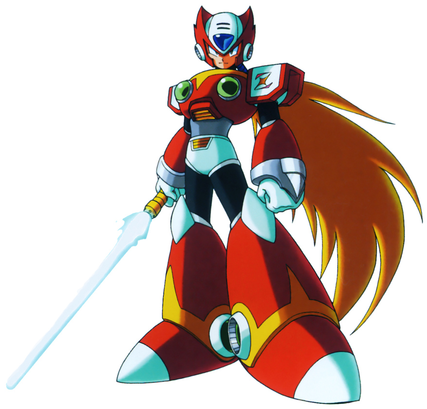

Zero (ゼロ) es un personaje de ficción perteneciente al universo de Mega Man, siendo uno de los tres protagonistas de Mega Man X y el protagonista de Mega Man Zero. En las series Mega Man X es uno de los Maverick Hunters con mayor rango (siendo estos A y S, siendo la última la mayor) junto con Mega Man X y Axl para detener a los reploides malvados conocidos como Mavericks, la mayoría, liderados por Sigma, el villano recurrente. Se debe hacer énfasis en que él no es un reploid, ya que estos son los robots diseñados sobre la base de X y él es un modelo original al igual que X, así que es un Androide. Al principio, Keiji Inafune, el creador de Mega Man y actual Presidente de Capcom, había admitido que había creado a Zero para que fuera el mismo Mega Man X, para remplazar a Mega Man, pero decidió crear a X, debido a que a los jugadores les encontraría difícil reconocer un parentesco entre Mega Man y el nuevo Mega Man X debido a la gran diferencia de diseño, así que mejor convirtió a Zero en compañero y en ciertas oportunidades protector de X. Nueve años después, Zero tendría su propio rol protagónico en Mega Man Zero, serie disponible para Gameboy Advance y posteriormente un compilado para Nintendo DS. Cuando Zero fue integrado en Mega Man X, era una extensión de los poderes de X, ya que poseía una versión más poderosa del X buster, llamado el Z buster y varias habilidades que X no tenía desde su diseño original (por ejemplo la habilidad de Dash), además, de que su diseño rebelde y rojo, contrastaba con el sencillo y azul X. Hasta el Mega Man X3, Zero era un personaje con el cual no se podía jugar, y sólo aparecía para ayudar a X en ciertas ocasiones, pero sólo como parte de la historia. Cuando se integró, se trató de que fuera una diferente experiencia de juego alternativa a X, a pesar de que en el Mega Man X3 sólo podía jugar ciertas partes en las misiones, y si perdía una vida se volvía inutilizable por el resto del juego. Ya en el Mega Man X4, donde se hizo plenamente jugable, se vio la real diferencia de jugabilidad entre X y Zero, mientras que X usaba poderosos ataques a larga distancia, Zero ganó una poderosa arma de corta distancia, la Z saber, que era una espada láser.